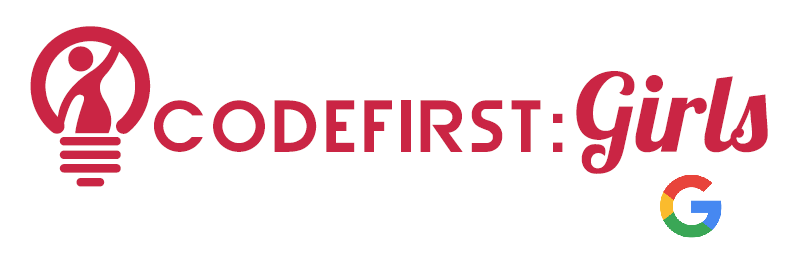

Hi! I'm Ambia
developer and creator.
I'm a developer with a keen interest in the latest technologies.
I particulary enjoy frontend web development and am keen
to learn about mobile development and UI design.
I've been part of CodeFirst:Girls courses and actively support
diversity and inclusion within the technology industry.
Welcome!
As part of my plan to build up experience in front end development, I decided to build this website to document my coding journey!
I have a background in History, but I've slowly been developing an interest in web development.
Scroll down to read more about my coding journey!
January 2018
CodeFirstGirls: Beginners
I began my first experience of coding at the start of 2018. I was accepted on the CodeFirstGirls beginners course which took place at Google.
We learnt HTML, CSS, JS and more! The first few weeks were quite overwhelming given that I had no experience of coding before and I felt like I had to change how my brain worked.
It took time, patience and I definitely had to reach out for help (the best way to learn coding).
By the end of the course, I had built a website with my team using all the skills we had learnt.

December 2018
Moving over to Systems
I had spent the last year working as an assistant in the LSE Summer School. While fun, I wanted to try going down a tech career path but I was still very unsure
of how to do this with the little experience I had.
I ended up starting a role in the Systems department. When I started, I felt very overwhelmed. There was a lot of stuff to learn and it took at least 3 months for me to find my feet and I'm still learning! This position is good as it allows
me to dabble in coding, work on my own projects alongside my work while learning new languages (especially SQL) and building on my Salesforce knowledge.

January 2019
CodeFirstGirls: Advanced (Python)
A year on from my first CFG course and I wanted to tackle the Advanced! Accepted onto the Python course run at QuantumBlack, I continued my coding journey! The Python course
was a big jump from last year. There was a lot to learn and only 8 weeks to learn it all. We covered Python, Flask, Jinga, Command and more!
I found the Python course a lot more difficult than the Beginners. It required a lot
of outside time and concentration in class. By the end of the course, my team mate and I had built a website based on hiking and pulling in data from our database using SQL and Python.
You can see it in my Projects.